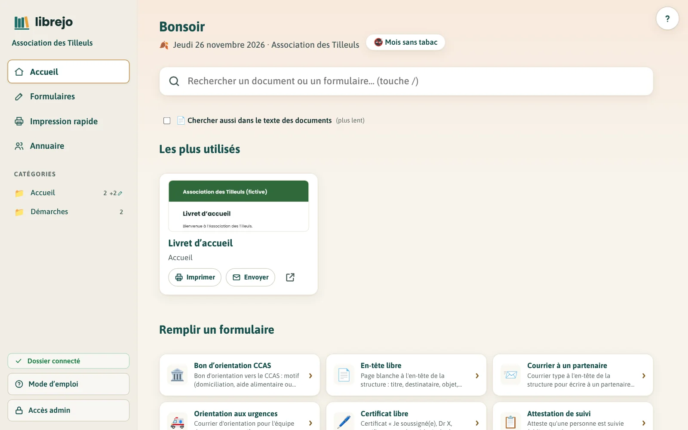
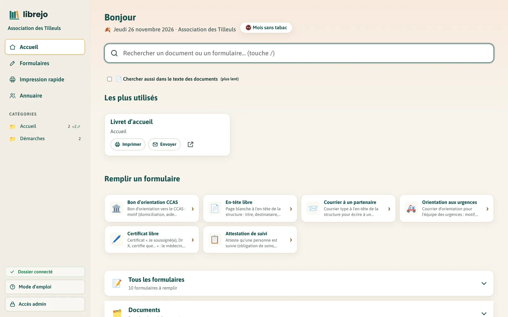
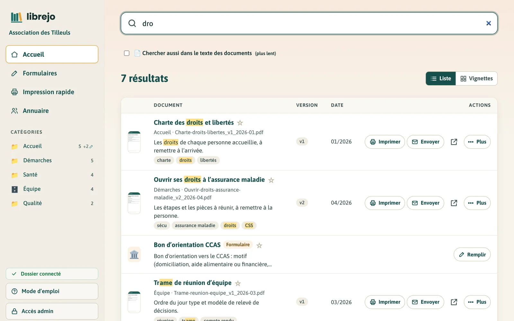
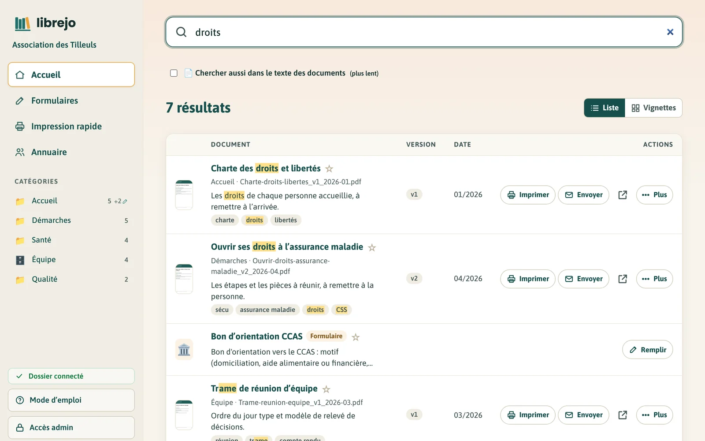
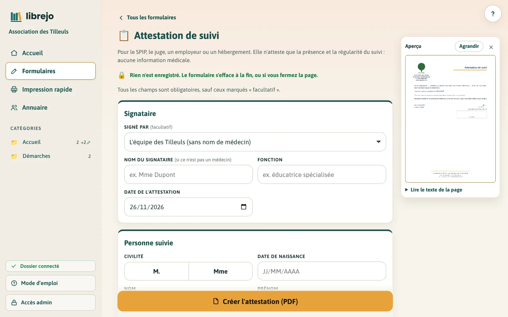
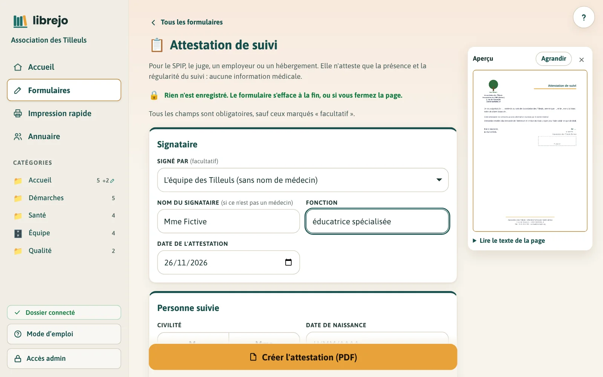
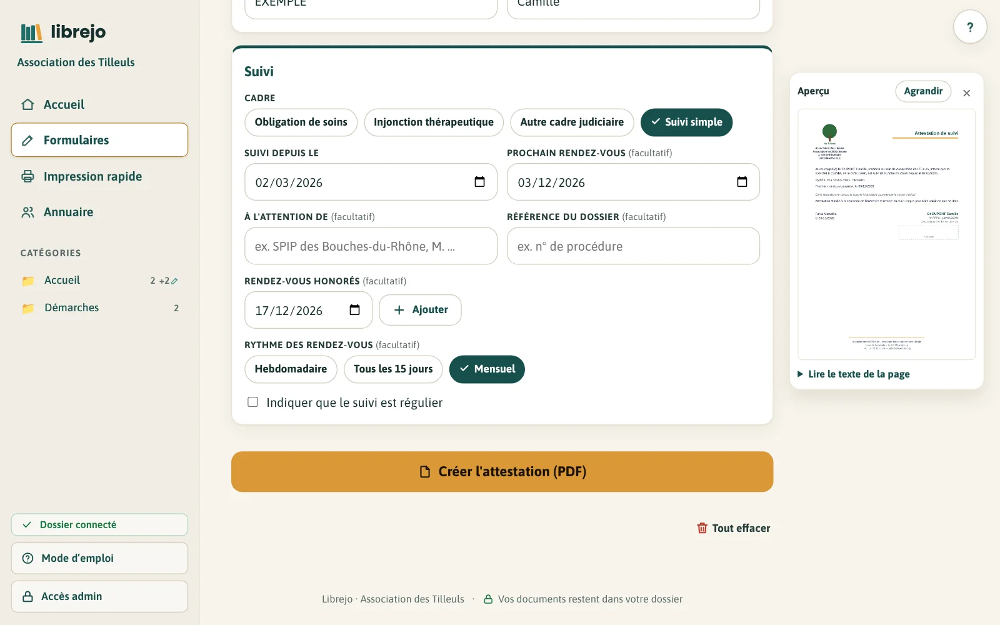
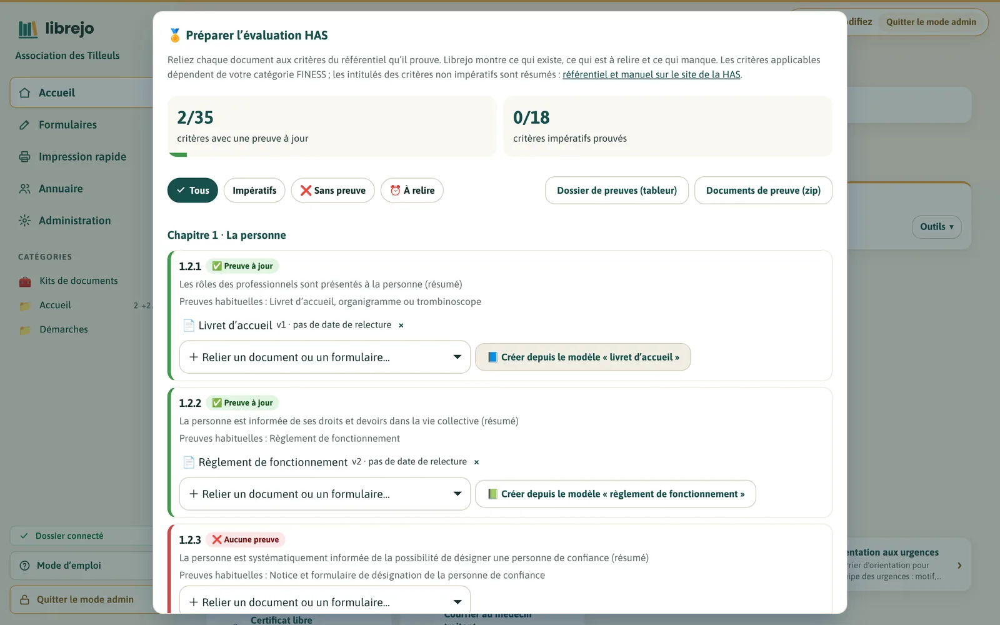

Le bon document, tout de suite.
Librejo range les documents de votre équipe, pour que chacun s’y retrouve.
M’envoyer le lienLibrejo s’utilise sur un ordinateur. Envoyez-vous le lien pour l’ouvrir au bureau.
Gratuit et libre. Né dans un CSAPA-CAARUD de Marseille.
Librejo en bref
La bonne version, sans chercher
Tapez deux mots : Librejo affiche la version à jour, prête à imprimer ou à envoyer.



Des formulaires à remplir à l’écran
Remplissez une attestation ou un courrier : Librejo produit le PDF à l’en-tête de la structure et prépare le mail.



Vos documents restent chez vous
- Librejo n’a pas de serveur : tout reste dans le dossier de la structure.
- Aucune donnée de personne accompagnée n’est gardée.
- Vos fichiers d’origine ne sont jamais modifiés.
Prêt pour l’évaluation HAS
Reliez chaque document au critère qu’il prouve : Librejo indique ce qui est à jour, à relire ou manquant.

Prêt en dix minutes
Un ordinateur avec Chrome ou Edge suffit. Avec plusieurs postes, il faut aussi un dossier partagé (NAS ou Drive).
M’envoyer le lienLibrejo s’utilise sur un ordinateur. Envoyez-vous le lien pour l’ouvrir au bureau.